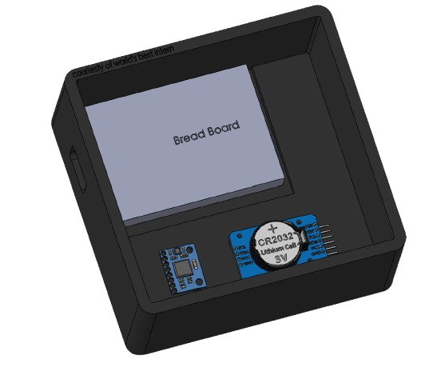
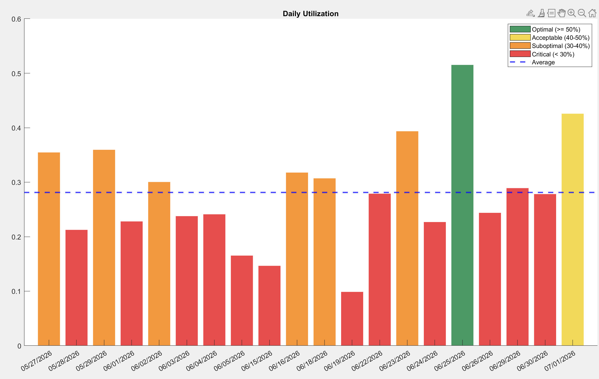

During my time as an intern at Weldon Steel One of my projects was improving the utilization of their Messer plasma table.

As part of the time study, I created a device to automate the collection of the Messer table utilization.

With an esp32 microcontroller with an accelerometer sensor and real time clock, the device detects movement of the laser gantry and logs the resulting data to a file that can be downloaded by connecting to the microcontroller Wi-Fi network or by physical cable.

The device would write to a CSV file when movement was detected. I then created a Matlab script that created daily utilization percentages. From May-June the device was deployed.

Using the collected data alongside observations of machine operations, I was able to correlate operational inefficiency with an associated downtime percentage from the monitoring device, and create a planned course of action for the process improvement with an estimated 30% increase of efficiency.

Thank you for the team at Weldon Steel giving me an amazing summer intern expierence!